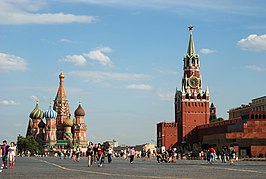
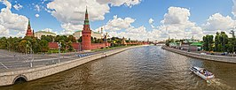
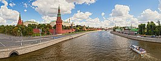
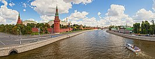
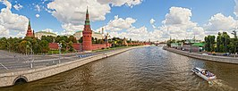

Москва – столица России, многонациональный город на Москве-реке в западной части страны. В его историческом центре находится средневековая крепость Кремль – резиденция российского президента.

 


Города России
3 города России
Москва
О Москве
Москва – столица России, многонациональный город на Москве-реке в западной части страны. В его историческом центре находится средневековая крепость Кремль – резиденция российского президента.

Санкт-Петербург
О Санкт-Петербург
Санкт-Петербург – русский портовый город на побережье Балтийского моря, который в течение двух веков служил столицей Российской империи. Он был основан в 1703 году Петром I, которому воздвигнут знаменитый памятник "Медный всадник".
Город по праву считается культурным центром страны. У туристов пользуются популярностью Мариинский театр, где проходят оперные и балетные спектакли, и Государственный Русский музей с коллекцией русского искусства, которая включает как православные иконы, так и работы художника-абстракциониста Василия Кандинского.
Был центром трёх революций: 1905—1907 годов, Февральской и Октябрьской революций 1917 года[14]. В ходе Великой Отечественной войны в 1941—1944 годах 872 дня находился в блокаде, в результате которой погибло около миллиона человек. 1 мая 1945 года Ленинград был объявлен городом-героемПерейти к разделу «#История». По состоянию на 2018 год в составе города федерального значения Санкт-Петербурга также находятся три города воинской славы: Кронштадт, Колпино, Ломоносов.
Новосибирск
О Новосибирске
Новосибирск – российский город на реке Обь в юго-восточной части Западно-Сибирской равнины. Благодаря строительству Транссибирской магистрали с XIX века город постоянно рос и развивался.
Об этом напоминает первый железнодорожный мост через реку Обь, который существует и сегодня. В центре Новосибирска возвышается собор XIX века во имя Александра Невского с золотыми куполами в византийском стиле.